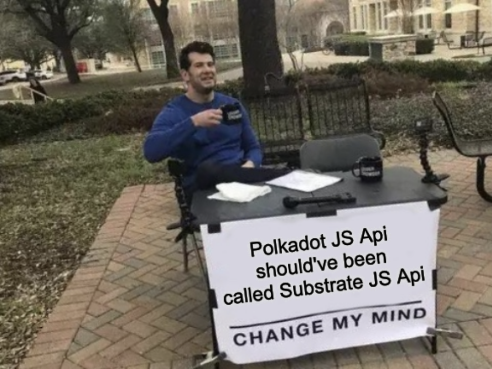

<!DOCTYPE html>
<html lang="en">
  <head>
    <meta charset="utf-8" />
    <meta name="viewport" content="width=device-width, initial-scale=1.0, maximum-scale=1.0, user-scalable=no" />

    <title>Polkadot JS API Crash Course</title>
    <link rel="shortcut icon" href="./../../../favicon.ico" />
    <link rel="stylesheet" href="./../../../dist/reset.css" />
    <link rel="stylesheet" href="./../../../dist/reveal.css" />
    <link rel="stylesheet" href="./../../../assets/styles/polkadot-theme.css" id="theme" />
    <link rel="stylesheet" href="./../../../css/highlight/shades-of-purple.css" />

    <link rel="stylesheet" href="./../../.././assets/styles/custom-classes.css" />
    <link rel="stylesheet" href="./../../.././assets/styles/polkadot-theme-base.css" />
    <link rel="stylesheet" href="./../../.././assets/styles/PBA-theme.css" />
    <link rel="stylesheet" href="./../../.././plugin/design-system/index.css" />

  </head>
  <body class="site">
    <header class="site-header">
      <a href="">
        
      </a>
      
    </header>
    <main class="site-reveal reveal">
      <article class="slides">
        <section ><section data-markdown><script type="text/template">

# Polkadot JS API Crash Course
</script></section><section data-markdown><script type="text/template">
## Context

- De facto library to work with all FRAME-based substrate runtimes.

</img>
</script></section><section data-markdown><script type="text/template">
## Overview

> https://github.com/kianenigma/polkadot-js-api-ts-template/
</script></section><section data-markdown><script type="text/template">
### Overview

- `api.registry`
- `api.rpc`
- `@polkadot/keyring`.
- `@polkadot/utils`.
</script></section><section data-markdown><script type="text/template">
### Overview

Almost everything else basically builds on top of `api.rpc`.

- `api.tx`
- `api.query`
- `api.consts`
- `api.derive`
</script></section></section><section  data-markdown><script type="text/template">
## `api`

<aside class="notes"><pre><code class="language-ts">import { ApiPromise, WsProvider } from &quot;@polkadot/api&quot;;
const provider = new WsProvider(&quot;wss://rpc.polkadot.io&quot;);
const api = await ApiPromise.create({ provider });

api.stats;
api.runtimeVersion;
api.isConnected;
</code></pre>
</aside></script></section><section  data-markdown><script type="text/template">
## `api.registry`

<aside class="notes"><pre><code class="language-ts">api.registry.chainDecimals;
api.registry.chainTokens;
api.registry.chainSS58;

api.registry.metadata;
api.registry.metadata.pallets.map(p =&gt; p.toHuman());

api.registry.createType();
</code></pre>
</aside></script></section><section  data-markdown><script type="text/template">
## `api.rpc`

- Can call into all RPC endpoints of the chain.
  All endpoints are divided based on on scope and method, such as `scope_method`, e.g. `system_chain`.

<aside class="notes"><pre><code class="language-ts">api.rpc.chain.getBlock()

api.rpc.system.health()
await api.rpc.system.version()

await api.rpc.state.getRuntimeVersion()
await api.rpc.state.getPairs(&quot;0x&quot;)

await api.rpc.state.getKeysPaged(&quot;0x&quot;, 100)
await api.rpc.state.getStorage()
https://polkadot.js.org/docs/substrate/rpc#getstoragekey-storagekey-at-blockhash-storagedata
await api.rpc.state.getStorageSize(&quot;0x3A636F6465&quot;),
</code></pre>
</aside></script></section><section  data-markdown><script type="text/template">
## `Keyring`

<aside class="notes"><pre><code class="language-ts">import KeyringPair from &quot;@polkadot/keyring&quot;;
import { Keyring } from &quot;@polkadot/api&quot;;
const kr = new Keyring({ type: &quot;sr25519&quot;, ss58Format: 42 });
const account = kr.addFromUri(&quot;evil danger film ship lamp gorilla wear job despair garbage dial repair&quot;);

let sig = account.sign(new Uint8Array([1, 2, 3]));
account.verify(new Uint8Array([1, 2, 3]), sig, account.publicKey);
</code></pre>
</aside></script></section><section  data-markdown><script type="text/template">
## `api.tx`

<aside class="notes"><pre><code class="language-ts">let call = api.tx.balances.transfer(&quot;5FUDdxaaZfye6ogJgqHh3Usqd6WN6q8aApFH4XNjU9iDvC49&quot;, 1000000000000);
call.toHuman();
const signed = call.sign(account);
call.toHuman();

signed.send();
signed.send();

await call1.signAndSend(account, ({ events = [], status, dispatchError }) =&gt; {
  console.log(status.toHuman());
});

call
  .paymentInfo(account)(await api.rpc.payment.queryInfo(call.toHex()))
  .toHuman();
</code></pre>
<!-- TODO: dry-run --></aside></script></section><section  data-markdown><script type="text/template">
## Types

- `createType`A powerful tool to keep in mind.
- everything is `Codec` by default, and has `toHuman`, `toU8a`, `toHex`, `toString` and **`.eq`**.

<aside class="notes"><pre><code class="language-ts">import * as BN from &quot;bn.js&quot;;
api.createType(&quot;Balance&quot;, new Uint8Array([1, 2, 3, 4]));
</code></pre>
</aside></script></section><section  data-markdown><script type="text/template">
## Crypto Utils

<aside class="notes"><pre><code class="language-ts">import { blake2AsHex, xxHashAsHex, checkAddress } from &quot;@polkadot/util-crypto&quot;;
blake2AsHex(&quot;Foo&quot;);
xxHashAsHex(&quot;Foo&quot;);
</code></pre>
</aside></script></section><section  data-markdown><script type="text/template">
## `api.query`

- `api.query.[module_name].[storage_name]()`
- `api.query.[module_name].[map_name](key)`
- `api.query.[module_name].[map_name].entries()`
- `api.query.[module_name].[double_map_name](key1, key2)`

<aside class="notes"><pre><code class="language-ts">await api.query.system
  .number()(await api.query.system.lastRuntimeUpgrade())
  .toHuman()(await api.query.council.members())
  .toHuman();
</code></pre>
<pre><code class="language-ts">// let&#39;s see what else a storage item has
api.query.council.proposalOf;
api.query.council.proposalOf
  .keyPrefix()(await api.query.council.proposalOf.entries())
  .forEach(([key, value]) =&gt; console.log(`${key} // ${value}`))(await api.query.council.proposalOf.entries())
  .forEach(([key, value]) =&gt; console.log(`${key} // ${key.args[0]} // ${key.slice(-32)} // ${value}`));
await api.query.council
  .proposalOf(&quot;0x678debcc07e2300db98fa74979c8e75ebd0075bee8f58bf7c1ca4bda724449f8&quot;)(
    await api.query.council.proposalOf.keys()
  )
  .map(x =&gt; x.toString());
</code></pre>
</aside></script></section><section  data-markdown><script type="text/template">
## `api.consts`

- `api.consts.[config_name]()`

<aside class="notes"><pre><code class="language-ts">api.consts.system.version.toHuman();
api.consts.system.blockWeights.toHuman();
api.consts.system.blockLength.toHuman();
</code></pre>
</aside></script></section><section  data-markdown><script type="text/template">
## `api.derive`

Helpers that combine multiple calls and queries into one.
Entirely optional to use.

<aside class="notes"><pre><code class="language-ts">await api.derive.accounts.hasIdentity(&quot;15S7YtETM31QxYYqubAwRJKRSM4v4Ua6WGFYnx1VuFBnWqdG&quot;);
const unsub = await api.derive.chain
  .subscribeNewHeads(h =&gt; {
    console.log(h.author);
    unsub();
  })(await api.rpc.chain.getBlockHash(100))
  .toHuman()(await api.rpc.chain.getBlock(&quot;0xedf9246b378fe4aa1c29d21c64b0bf9880553690ce6cd956c18c03310e49fa5f&quot;))
  .toHuman();
api.derive.chain.getBlockByNumber(1000);

api.derive.chain.bestNumberFinalized();
</code></pre>
</aside></script></section><section  data-markdown><script type="text/template">
## Exercise: Using Polkadot JS API

- Find the some interesting blocks in Polkadot/Kusama:
  - The largest block
  - The block that consumed the most weight.
  - Last remark that Shawn made onchain??? 🤔
- Bonus: use [subxt](https://github.com/emostov/substrate-subxt/).
</script></section>
      </article>
    </main>

    <script src="./../../../dist/reveal.js"></script>
    <script src="./../../../plugin/markdown/markdown.js"></script>
    <script src="./../../../plugin/highlight/highlight.js"></script>
    <script src="./../../../plugin/zoom/zoom.js"></script>
    <script src="./../../../plugin/notes/notes.js"></script>
    <script src="./../../../plugin/math/math.js"></script>

    <script type="module">
      import DesignSystem from "./../../../plugin/design-system/design-system.js"

      function extend() {
        var target = {};
        for (var i = 0; i < arguments.length; i++) {
          var source = arguments[i];
          for (var key in source) {
            if (source.hasOwnProperty(key)) {
              target[key] = source[key];
            }
          }
        }
        return target;
      }

      // default options to init reveal.js
      var defaultOptions = {
        controls: true,
        progress: true,
        history: true,
        center: true,
        transition: 'default', // none/fade/slide/convex/concave/zoom
        plugins: [
          RevealMarkdown,
          RevealHighlight,
          RevealZoom,
          RevealNotes,
          RevealMath,
          DesignSystem
        ]
      };

      // options from URL query string
      const queryOptions = Reveal().getQueryHash() || {};

      const options = extend(defaultOptions, {"width":1400,"height":900,"margin":0,"minScale":0.2,"maxScale":2,"transition":"none","controls":true,"progress":true,"center":true,"slideNumber":true,"backgroundTransition":"fade"}, queryOptions);
      options.baseUrl = '';
      Reveal.initialize(options);
    </script>
  </body>
</html>
